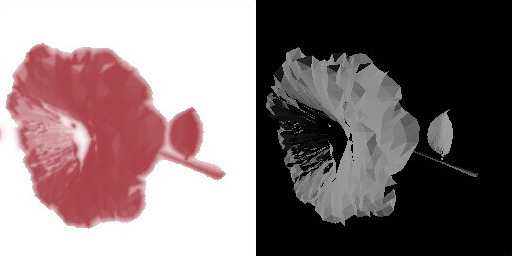
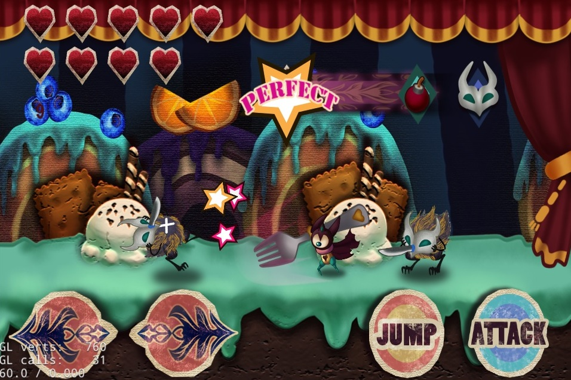
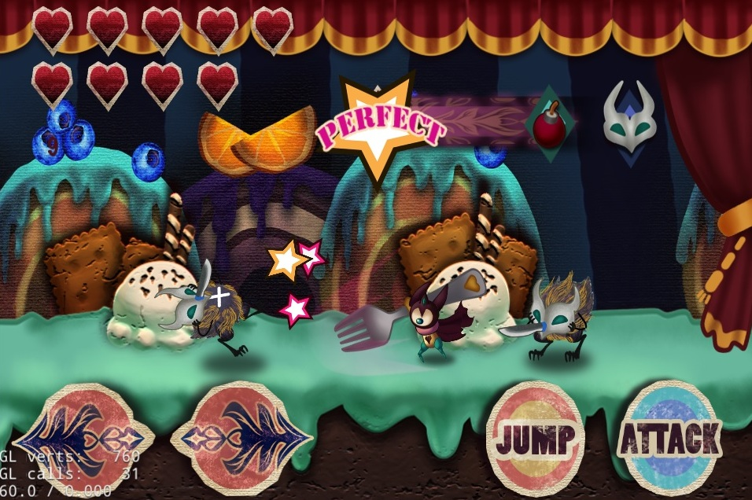

联系方式
QQ ：419446171
手机：15019494795
邮箱：doyoubihgx@gmail.com
该简历网页版：doyoubi.github.io
手机：15019494795
邮箱：doyoubihgx@gmail.com
该简历网页版：doyoubi.github.io
自我介绍
就读于深圳大学计算机学院。
因初三成功用简单的汇编修改GBA的口袋妖怪而对制作游戏产生兴趣。
喜欢比较不同编程语言的表达能力，喜欢剖解编程语言的特性。
玩c++，非常喜欢c++11。用Python做过网站。
费了很大劲去理解haskell和范畴论，觉得很神奇！但至今仍有 想不通的地方 。
除了编程语言、图形学、游戏相关的书，还因 《sicp》 和 《编程的修炼》 而开了眼界。
在校媒学子天地技术部中认识了一帮志同道合的人，是大学一件幸运的事。
这是我作笔记本用的博客
因初三成功用简单的汇编修改GBA的口袋妖怪而对制作游戏产生兴趣。
喜欢比较不同编程语言的表达能力，喜欢剖解编程语言的特性。
玩c++，非常喜欢c++11。用Python做过网站。
费了很大劲去理解haskell和范畴论，觉得很神奇！但至今仍有 想不通的地方 。
除了编程语言、图形学、游戏相关的书，还因 《sicp》 和 《编程的修炼》 而开了眼界。
在校媒学子天地技术部中认识了一帮志同道合的人，是大学一件幸运的事。
这是我作笔记本用的博客
项目经验
用opengl做三维水墨效果
这是一个高三就开始有的想法，希望能把三维物体渲染出水墨画的效果。
先用opengl 4.3实现了水墨扩散效果
（技术源于论文 MoXi: Real-Time Ink Dispersion in Absorbent Paper, Nelson S.-H. Chu 2005）
然后用二维的水墨扩散效果渲染三维物体。
从这个小研究中学习了opengl的可编程管线，学到了一些调试shader的小技巧。
明白了理清思路，把问题清晰表达出来的重要性。
先用opengl 4.3实现了水墨扩散效果
（技术源于论文 MoXi: Real-Time Ink Dispersion in Absorbent Paper, Nelson S.-H. Chu 2005）
然后用二维的水墨扩散效果渲染三维物体。

（右图是原来的三维模型，左边是加了水墨的效果）从这个小研究中学习了opengl的可编程管线，学到了一些调试shader的小技巧。
明白了理清思路，把问题清晰表达出来的重要性。
两个手游
 

第二个手游 (游戏视频, 源代码)结合了音乐游戏和平台游戏，玩家需要跟着音乐节拍躲避攻击、击倒敌人。